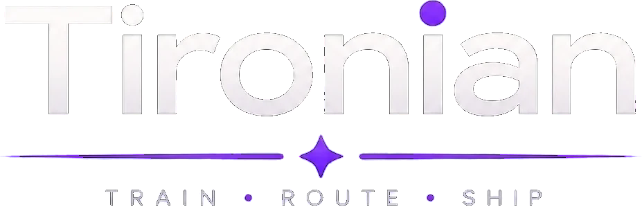

Today
The same small jobs, every day
REQUESTHow many .pdf files are in my Downloads?
REQUESTCount the .zip files in Desktop.
REQUESTHow many .png files are in Pictures?
☁
A big cloud model
every time · paid per call

Your own small model, learned from your own Hermes work.
A plugin for Hermes Agent
What Tironian does
From your sessions to task families
01
Record
every step Hermes takes, with its tool calls and results
02
Mask secrets
keys, tokens, emails and your username, before anything is stored
03
Grade
from what happened: errors, corrections, retries, approvals
04
Group
repeated requests into task families
count files
107 requests · 92 good
largest files
38 requests · 23 good
recent files
31 requests · 29 good
No keys
No GPU
Nothing leaves your machine
Reads history read only
Real output from my test machine
Training on Modal · L4 GPU
sped up
Qwen3 1.7B
LoRA fine-tune
Q4_K_M GGUF · 1.11 GB
Your own Modal account
≈ $0.14 · hard cap $0.60
The gate
Proven on sessions it never saw
Held-out sessions
Blind judge
95% lower bound ≥ 85%
TRAINED ON
HELD OUT · NEVER SEEN
Early model · v2
7
/ 31 passed
lower bound 11%
GATE NOT PASSED
Current model · v4
0
/ 51 first steps
PASSES
0%lower bound 93%
Your request
How many .pdf files…
Your student
writes the command
Hermes
runs it
Your main model
writes the answer
Shadow mode
Real requests, compared in the background
0 / 20
agreed with your model
SHADOW
→
LIVE
route: live · served by your student · 6.2 s
Every answer is checked
✓Parses cleanly
✓Uses only offered tools
✓Arguments fit the schema
If anything is off
Student unreachable. Your usual model answered instead, no error shown.
live · fallback · 2.0 s


Real screen: the Tironian page in Hermes
Your own model, proven on your own work.
$ hermes plugins install angelraph/tironian
tironian.vercel.app · github.com/angelraph/tironian
Tironian
Learn
Train
Prove
Shadow
Live